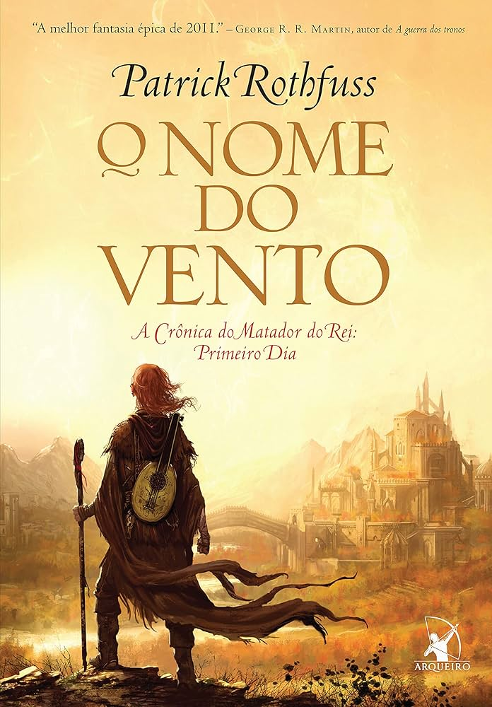

📖O Nome do VentoCrônica do Matador do Rei — Livro I

📖O Nome do VentoA narrativa se divide em dois planos de tempo. No presente, Kvothe — sob o nome falso de Kote — vive escondido num albergue remoto chamado Pedra de Wayside. Quando o Cronista, um escritor de histórias, o encontra e o reconhece, Kvothe concorda em narrar sua própria vida durante três dias.
O primeiro dia é O Nome do Vento. Kvothe narra sua infância feliz na estrada com os Edema Ruh, sob o ensinamento do bardo Arliden e os olhos da misteriosa maga Abenthy — a primeira pessoa a lhe revelar a existência da Arcanía e o conceito de Nomear.
Depois vem a tragédia: sua trupe é dizimada pelos Chandrian, e Kvothe sobrevive por acaso. Os anos seguintes são de fome e solidão nas ruas da enorme cidade de Tarbean, onde aprende a sobreviver pela força da astúcia e da música.
Finalmente, com quinze anos, ele parte para a Universidade. Lá, além das artes da Simpácia e da Alquimia, conhece Denna — a mulher que se tornará a maior obsessão de sua vida — e faz inimigos poderosos, como o nobre Ambrose. A jornada culmina com Kvothe demonstrando um talento para Nomear que ninguém via em gerações.
Kvothe cresce viajando com os Edema Ruh, aprendendo música e magia com seu pai Arliden e com o simpata Abenthy. É uma infância idílica que define quem ele é.
Os sete seres lendários aparecem e massacram a trupe. Kvothe sobrevive e fica só, com doze anos, num mundo que subitamente ficou imenso e hostil.
Três anos nas ruas de uma cidade imensa. Kvothe aprende a roubar, a se esconder, a silenciar a própria mente — e quase se perde completamente no esquecimento.
Entrada na Arcanía, rivais, amigos, dívidas e amor. Kvothe se torna o estudante mais jovem admitido na história, mas cada conquista tem um preço.
O clímax: Kvothe demonstra seu dom para Nomear de forma que espanta até os mestres. Uma porta se abre — e uma lenda começa a tomar forma.